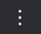
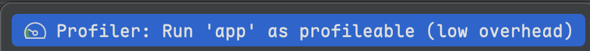

Android中卡顿治理主要集中在recyclerView滑动列表时候有卡顿，我们结合android studio中profiler的systemTrace工具来查看卡顿情况，我目前的Android Studio已更新到Meerkat Feature Drop | 2024.3.2 Patch 1版本，下来来看看如何通过该工具来定位到具体的卡顿。
首先Android Studio中System Trace工具是基于perfetto来进行定位，所以需要有一定的perfetto经验才能使用该功能，perfetto能通过内核、系统组件、本地内存、cpu等多方面进行收集数据，而我们的卡顿一般是监控应用的主线程绘制阶段的数据，而android代码中已经为主线程绘制阶段添加了各种tag，通过该tag能知道是什么组件的绘制阶段发生了卡顿。
首先我的手机是Android13的版本，在卡顿检测官网中介绍了Android12以上、Android11、Android10以下的区别，这里我就以Android13来讲解如何识别卡顿。
在官网中介绍有两种模式，一种是可分析应用，一种是可调试应用，新版android studio中的profiler中system trace要求是可分析的(profileable)应用，在启动应用时候，点击menu toolbar的更多操作，然后点击，便可进入到profileable模式，也可以将变体切换为release模式，在release变体下，在清单文件加上如下配置：
|
|
配置完后，接着就是选择相应的应用，然后点击System Trace选项进行监控应用。比如我在RecyclerView的列表adapter中onBindViewHolder进行Thread.sleep(50)，然后观察生成的trace文件：
 整体上分为Janky frames、Threads、Analysis几个区域，Janky frames默认展示的是卡顿帧，我们也可以勾选All Frames，Threads部分展示的时候所有线程，比如app的主线程，RenderThread渲染线程等。Analysis区域展示的是某块的跟踪信息。
整体上分为Janky frames、Threads、Analysis几个区域，Janky frames默认展示的是卡顿帧，我们也可以勾选All Frames，Threads部分展示的时候所有线程，比如app的主线程，RenderThread渲染线程等。Analysis区域展示的是某块的跟踪信息。
卡顿帧：它是我们分析卡顿最直接的图形，我们首先选中某一个卡顿帧，然后该帧会出现两个颜色，左边的深红色表示一针的期望时间，而右边的暗红色表示该帧延迟了多久。我们可以看到右边Analysis区域标明了Jank type是Deadline missed（延迟帧），Layer name表明是哪个activity，Expected duration表示期望时间，Actual duration表示实际执行时间。events associated with frame展示的是该帧从主线程到RenderThread到gpu到SurfaceFlinger的关键事件。可以通过该区域分析该帧是应用层绘制耗时多，还是渲染线程或者是gpu等阶段耗时久。下面还会展示Main thread states和RenderThread states，分别记录了现成的状态、每个状态的耗时、以及每个状态的占比，Occurrences表示的是当前线程在该帧的生命周期内，在该状态下的次数。

从上面截图中可以看到在该帧中，主线程的sleeping状态占比是最高的。
回到左边的Janky frames面板，再回到刚才那一帧，然后按m键会自动放大该帧的视图，在主线程视图中查看跟踪事件的tag。这里介绍系统system trace中常见的一帧的tag：
| tag名字 | 描述 |
|---|---|
| Choreographer#doFrame *** | 每一帧的父事件，其中后面的数字是vsync |
| input | 每一帧中执行input事件 |
| animation | 每一帧执行animation事件 |
| RV Scroll | recyclerview滑动事件 |
选中某一帧的Choreographer#doFrame后，在右侧的Analysis面板会看到该帧的相关信息。分为Summary、Top Down、Flame Chart、Bottom Up、Events几个tab。
-
Summary

- Time Range：该帧的时间
- Data Type：该帧的事件类型
- start time：事件在trace中的开始时间
- Name：事件的名称
- Wall Duration：事件从开始到结束所经过的实际时间，这包括线程处于Running、Runnable、Waiting、Sleeping等所有状态的时间
- Wall Self time：该时间表示不算子事件的时间，只算自己等待其他操作的时间
- cpu duration：事件在cpu上执行的实际时间，包括子事件的执行时间。但是这只包括线程处于running状态下的时间，也就是它正在主动使用cpu进行计算的时间
- cpu self time：和上面cpu duration唯一区别是刨除了子事件的执行时间，也就是自己占用cpu处于running状态下的时间
- All Occurrences：这里是统计了所有相同名字的事件次数、平均事件、最大事件、最小事件、所有事件的标准差，标准差衡量了数据相对于平均值的离散程度，值越大表示波动越大。其中这几项里面的时间都是表示Wall duration，也就是真实所经过的时间
- Longest running occurrences：按运行时间进行排序的事件，通过该表可以找到事件消耗最久的事件，从而优先处理耗时最久的事件
-
Top Down

- Top Down关注的是父事件到子事件的层级信息
- Total：该事件所消耗的实际时间，也就是前面提到的Wall Duration
- 第一个百分比：当前事件的Total时间占比根事件的Total时间比例
- Self：不算子事件的Total时间，可以看出来每个时间的total时间=self+所有子事件的total时间
- 第二个百分比：当前事件的self时间占比根事件的total时间的比例
- children：当前事件的所有子事件的实际消耗时间
- 第三个百分比：所有子事件消耗的时间占根事件的total时间的比例
-
Flame Chart

- Flame Chart视图也叫火焰图，从底下到上面依次是父事件到子事件，该图能直观的看到子事件在父事件上的占比,在父事件上展示子事件的时候，会把占比最长的放在左边，所以排查子事件的时候优先看左边的事件
-
Bottom Up

- bottom up视图将父事件和子事件平铺展开，通过它可以直观的看出当前事件占比根事件的占比，也可以直接按照比例排序查看占比高的事件
-
Events

- 其实它是对前面Summary视图中的All Occurrences（所有相同事件）的汇总，并把各项信息列出来，方便我们知道每个事件的耗时
回到前面例子中，我们在Adapter的onBindViewHolder中加入了Thread.sleep(50)的时间，然后回到刚才那一帧，查看线程的状态：
 我们选择了刚刚的那一帧，发现在其中主线程一直处于sleep状态，那最终是怎么发现是在onBindViewHolder中线程处于休眠状态的呢，我们看下该帧的RV Scroll事件：
我们选择了刚刚的那一帧，发现在其中主线程一直处于sleep状态，那最终是怎么发现是在onBindViewHolder中线程处于休眠状态的呢，我们看下该帧的RV Scroll事件：
 在该事件的Top Down面板中，大部分占用时间是在RV Scroll中，其中子事件的时间占用很少，在RV OnBindView中的self时间很少，是因为它不占用cpu的资源，而systemtrace记录的是RV OnBindView真正占用cpu的运行时间。所以在RV OnBindView上的时间占比很少。所以最终时间消耗体现在RV Scroll上面，而结合线程的状态，所以能确定是在recyclerview的scroll阶段线程出现了大量的sleep状态。
在该事件的Top Down面板中，大部分占用时间是在RV Scroll中，其中子事件的时间占用很少，在RV OnBindView中的self时间很少，是因为它不占用cpu的资源，而systemtrace记录的是RV OnBindView真正占用cpu的运行时间。所以在RV OnBindView上的时间占比很少。所以最终时间消耗体现在RV Scroll上面，而结合线程的状态，所以能确定是在recyclerview的scroll阶段线程出现了大量的sleep状态。
-
案例分析

- 这是一个来回滑动recyclerview的页面，在Janky frames有卡顿的帧，我们点开第一个卡顿帧，然后使用
M键放大该帧：

- 观察卡顿原因是在滑动过程中一直有inflate，通过代码查看是因为该视图存在recyclerview嵌套recyclerview导致的，在onbindViewHolder中重新去inflate了子布局导致会重新inflate，此处的改法是将外层的recyclerview的layoutmanager重写calculateExtraLayoutSpace方法，然后将extraLayoutSpace的上下方向的偏移量设置为外层recyclerview高度的2倍。
- 这是一个来回滑动recyclerview的页面，在Janky frames有卡顿的帧，我们点开第一个卡顿帧，然后使用
-
参考：